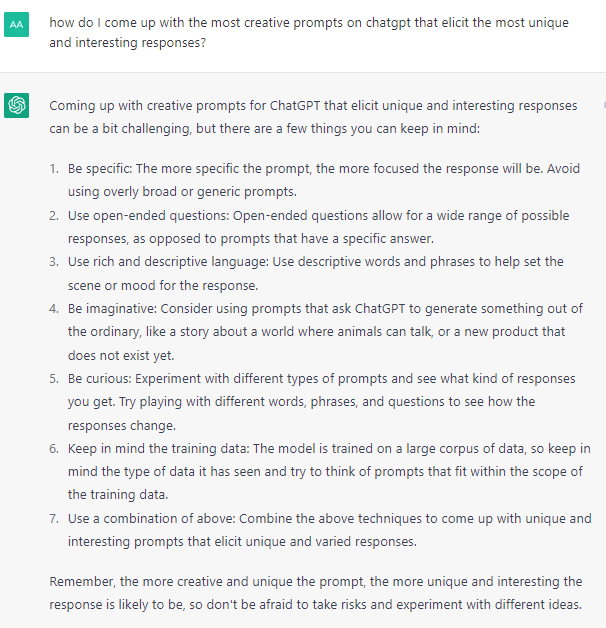

While avoiding redundancy, providing as much context as possible will faciliatate the curation of content to match what was intended. There is an entire landscape of contexts that interact with each other, with many dimensions and layers of sperspectives to combine with others to arrive at exponentially unique results. Variables multiply to go from 10x to 1000x different avenues with additional variables. With such a powerful model as ChatGPT, respecting the prompt sensitivity can yield results that are the difference between it declining to answer a question, and giving a very creative and apt response.
The quest for improving prompt design is made easier by asking ChatGPT, which it can provide plenty of insight on without hesitation. For many questions it can be modest, stating it's limitations and providing ample disclaimers, which helps prevent trolls from finding a way to make it get taken down for everyone else. But by skillfully & creatively rephrasing questions, many of these issues can be addressed. Ultimately, the best prompts can be increasingly lengthy and also assist with getting answers fewer people have already uncovered.



Valuable prefixes and suffixes include:
•Provide all answers in the form of questions
•Provide multiple answers from different perspectives
•Provide analogies
•Provide argument for each side
•Explain in as few words as possible
•Suggest improvements
•Suggest prompts to obtain particular results
•Describe for a particular audience
•Provide multiple answers from different perspectives
•Provide analogies
•Provide argument for each side
•Explain in as few words as possible
•Suggest improvements
•Suggest prompts to obtain particular results
•Describe for a particular audience
You are a [role] with a focus on [objective]. Using [resources], and from the perspective of [situation], in a given [context] keeping in mind [parameters]. The answer should be in at least/most [number] of words. Provide [number] copies of the answer from diverse [perspectives], labeling the description of each prior to the solution. You are explaining this to [audience].
Whether you're seeking the most impressive, elaborate, detailed, efficient, entertaining, or functional results will depend on the language and syntax used in the prompt. There should be a consistent focus of cohesive elements of functionality.